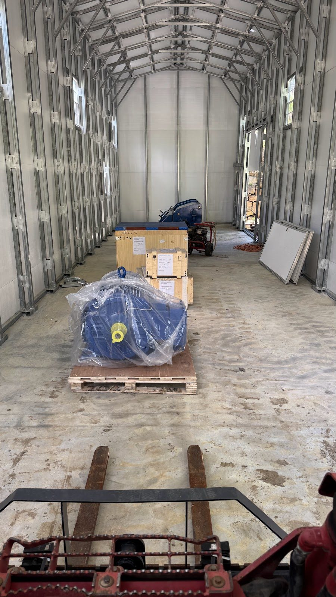
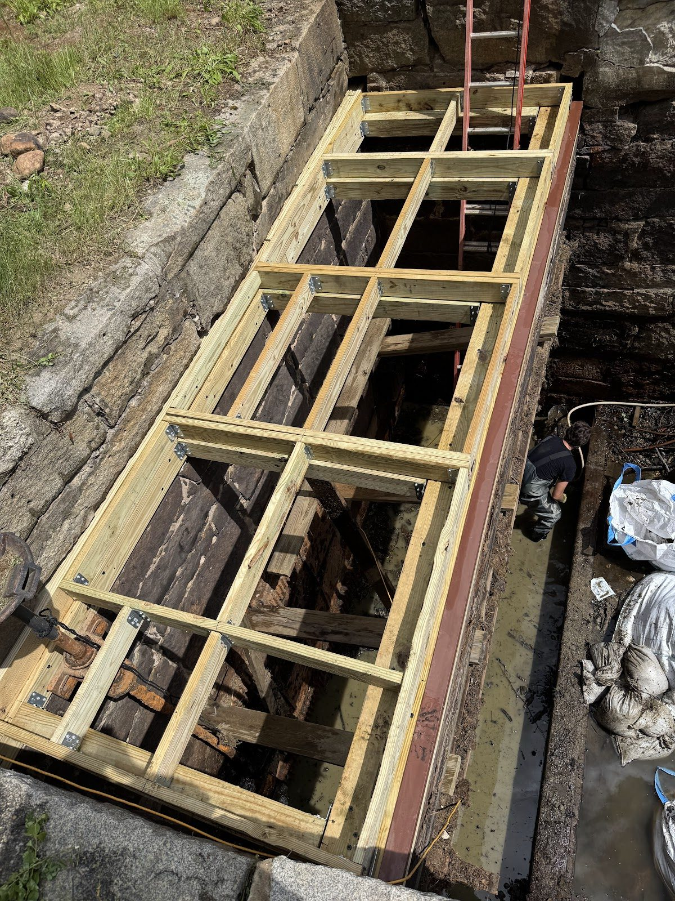
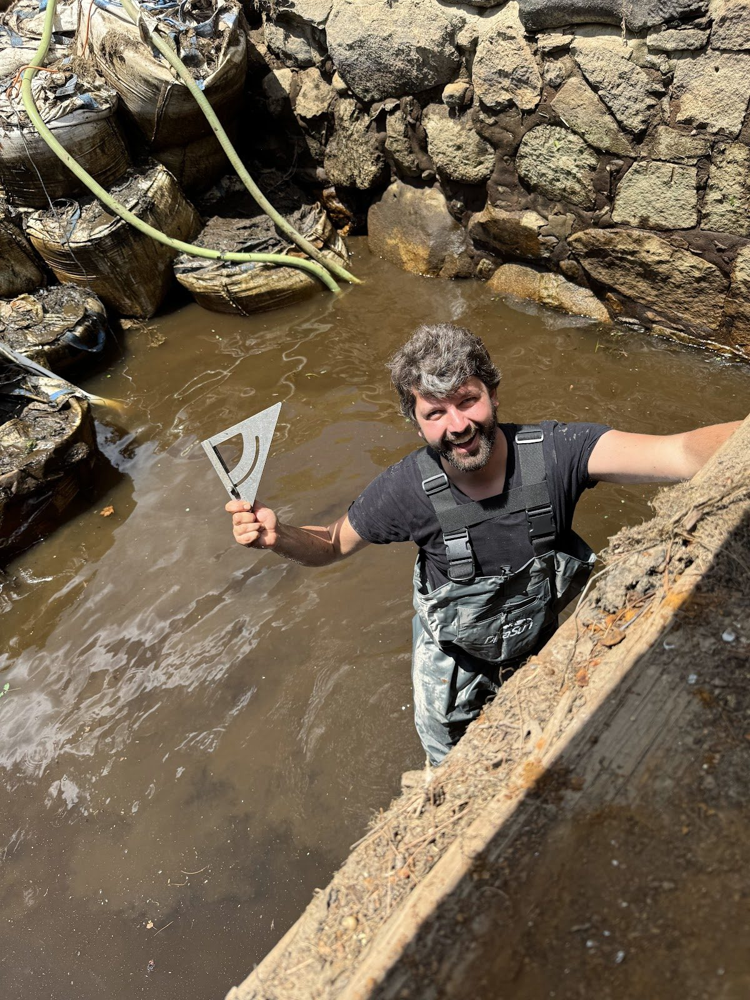
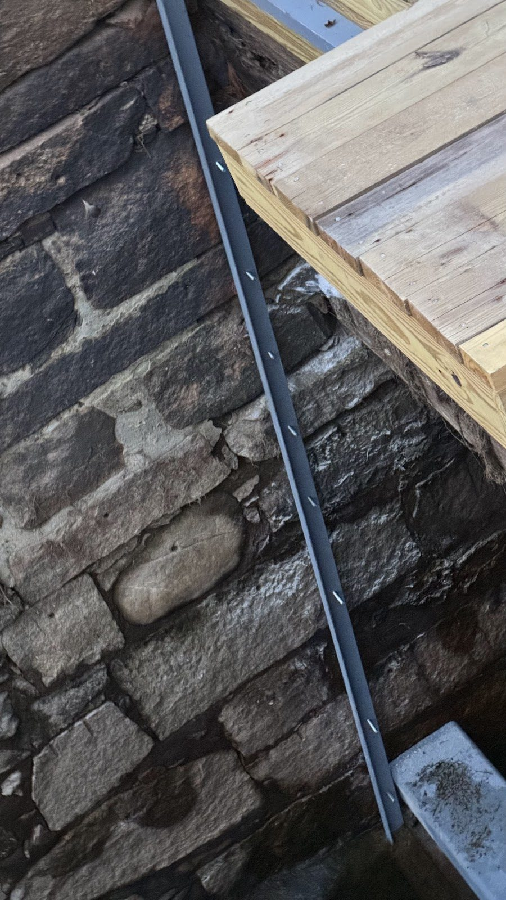
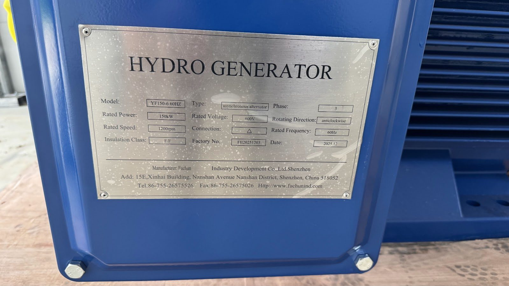

Where We Stand, and the Road to Refill

Three years in, it's worth stepping back and taking stock — of what's done, what's left, and when the pond comes back.
Done: the dam's left abutment rebuilt in new concrete. The old turbine, draft tubes, and generator retired and removed. The new crossflow turbine and draft tube installed. The old powerhouse building replaced by a new steel-shell generator house on preserved fieldstone foundations. The new generator and gearbox delivered. The headgate machinery out for rebuild, with new parts manufactured. The penstock most of the way through a full internal rehabilitation. And two years of hard-won knowledge about what the Souhegan does to temporary structures.






Left, in order: restore the coffer dam for a safe headgate work area. Install the new trash rack support steel — horizontal beams and grouted vertical supports. Assemble, coat, and install the new trash rack. Install the stop-log system that lets us isolate the intake without future drawdowns. Then the drawdown can end and Waterloom Pond refills — the milestone that matters most to our neighbors. After refill: the rebuilt headgate shaft and pinions go in, the penstock rehab and adapter pipe are finished, the gearbox and generator are set and aligned, switchgear goes in, and the plant connects to the grid.
Our working target for the end of the drawdown is mid-September, and we intend to beat it — ideally by several weeks. Everything this season is sequenced around getting the pond back up as early as the work safely allows.
The stop-log system deserves a special mention: it's the piece that makes this the last full drawdown. Future maintenance will happen behind stop-logs with the pond at level — which is exactly how a plant designed for the next hundred years should work.
Thanks for following along. The best posts are still ahead — there's one coming, sometime not too far from now, with the first kilowatt-hours in it.